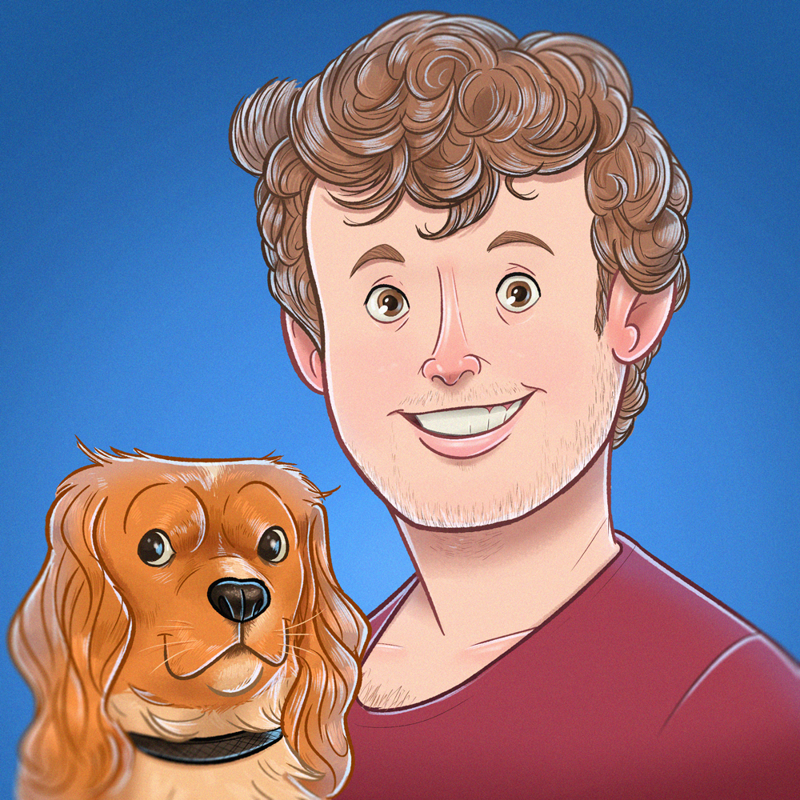

Ard Scheirlynck
Developer
Main
Projects
Ard Scheirlynck
Developer, Geek and Editor @9lives.be
About me

Hi, my name's Ard Scheirlynck and I'd like to welcome you to my homepage! I'm a developer, geek and
self-proclaimed inventor living in Gullegem, Belgium.
In my daily work I develop backend applications for our internal customers at Melexis. You could say I'm
a bit of Jack of all trades; analyzing, developing,
deploying, documenting all sound familiar to me. Feel free to take a look on this page and send me a DM
if you'd like to drink a coffee with me ☕️!
In my spare time I like spending time with my dog Nalu 🐶 and going for a hike. Next to that I like to
play basketball, cycling and running.
Gaming is also a big passion of mine. I'm therefore happy and proud to say I'm an editor for
9lives.be, Benelux' largest gaming website. Besides all that, I also like
experimenting
with Raspberry Pi's, Arduino's, AI's and all other kind of buzzwords. I'll try to keep the projects page
updated to
give you a view on what I'm currently working on.
Kindly yours,
Ard
Hi, my name's Ard Scheirlynck and I'd like to welcome you to my homepage! I'm a developer, geek and self-proclaimed inventor living in Gullegem, Belgium. In my daily work I develop backend applications for our internal customers at Melexis. You could say I'm a bit of Jack of all trades; analyzing, developing, deploying, documenting all sound familiar to me. Feel free to take a look on this page and send me a DM if you'd like to drink a coffee with me ☕️!
In my spare time I like spending time with my dog Nalu 🐶 and going for a hike. Next to that I like to play basketball, cycling and running. Gaming is also a big passion of mine. I'm therefore happy and proud to say I'm an editor for 9lives.be, Benelux' largest gaming website. Besides all that, I also like experimenting with Raspberry Pi's, Arduino's, AI's and all other kind of buzzwords. I'll try to keep the projects page updated to give you a view on what I'm currently working on.
Kindly yours, Ard